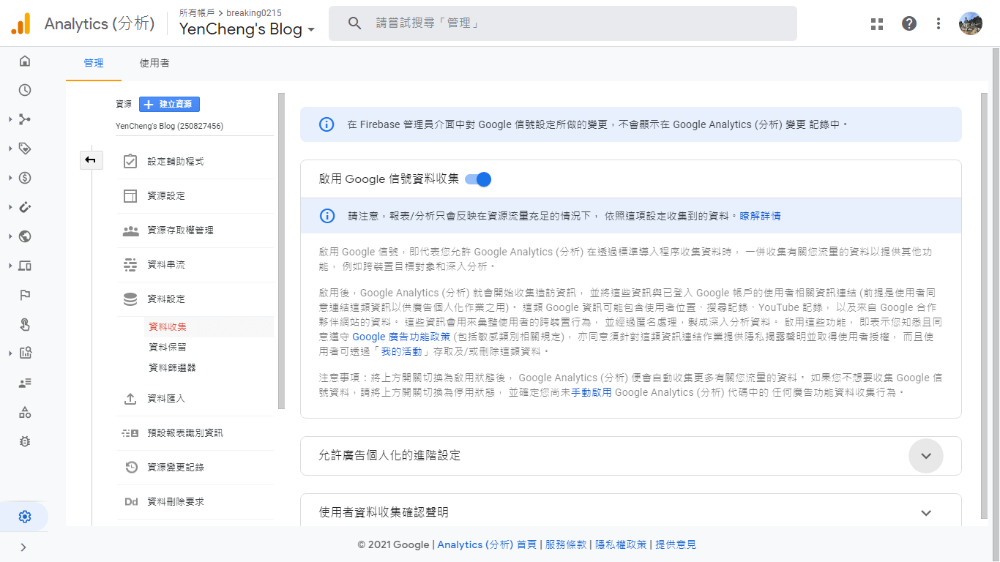
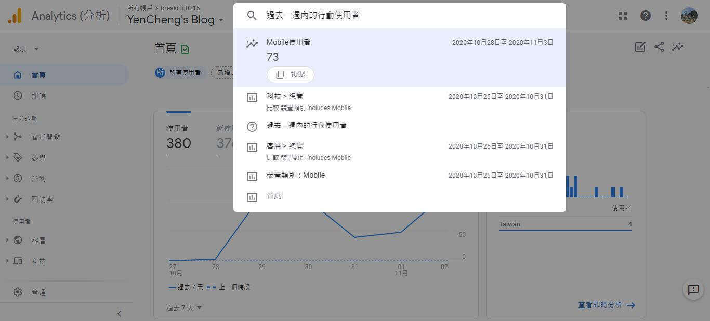
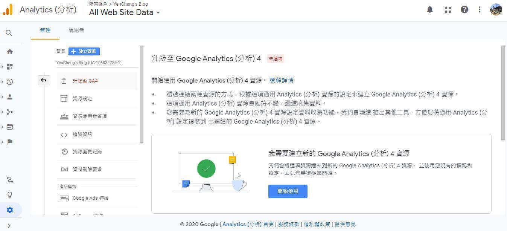
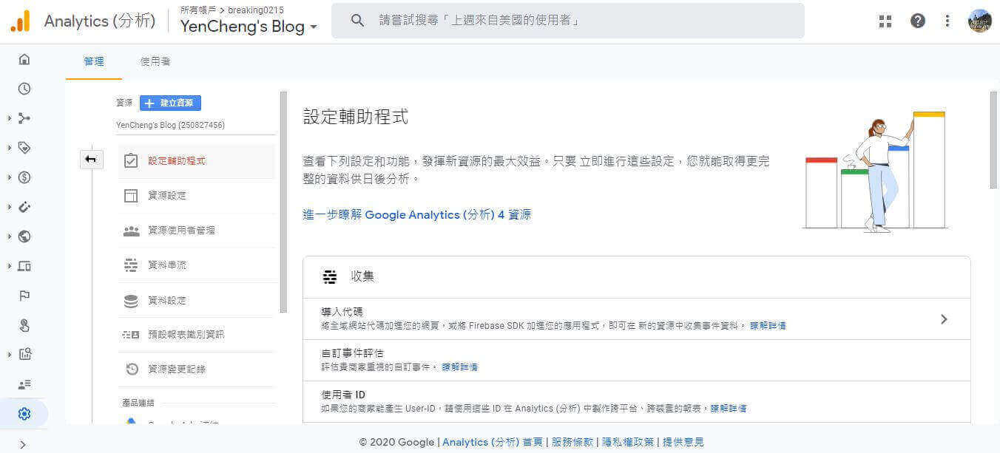
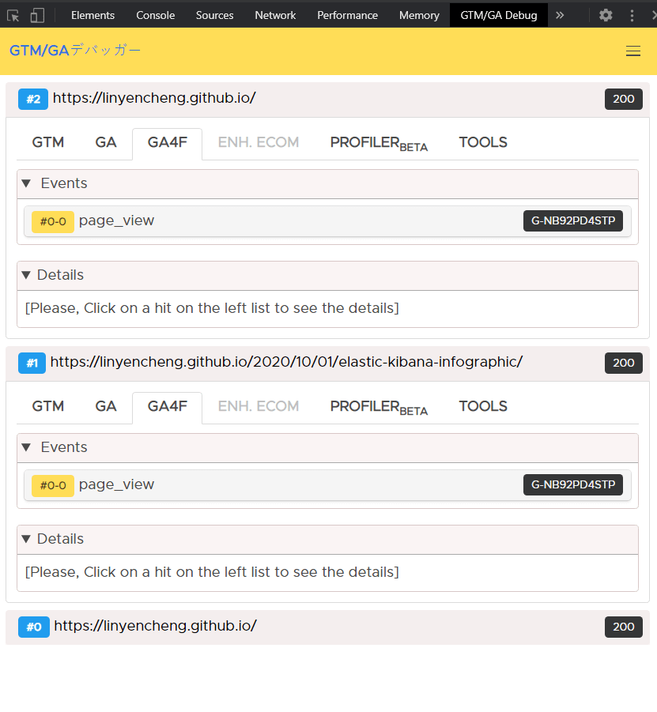
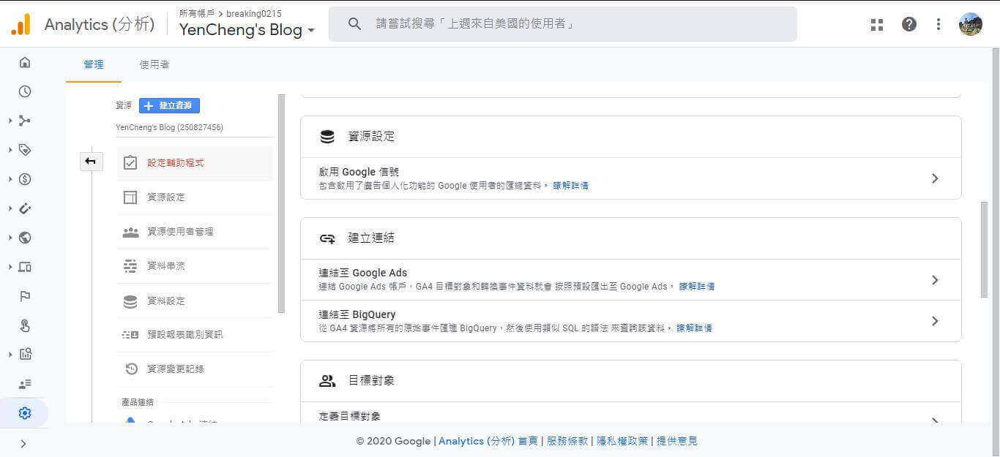
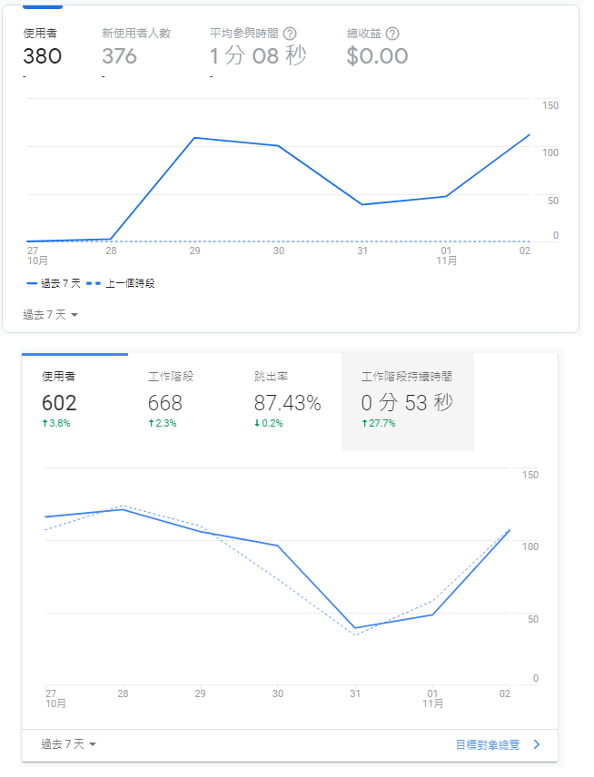
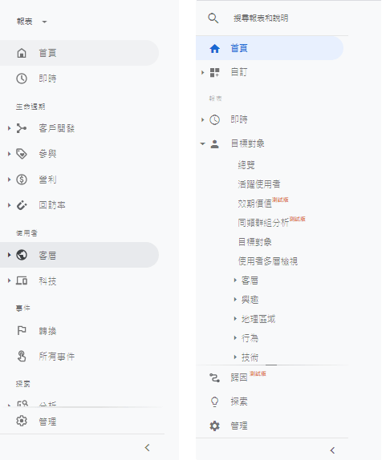
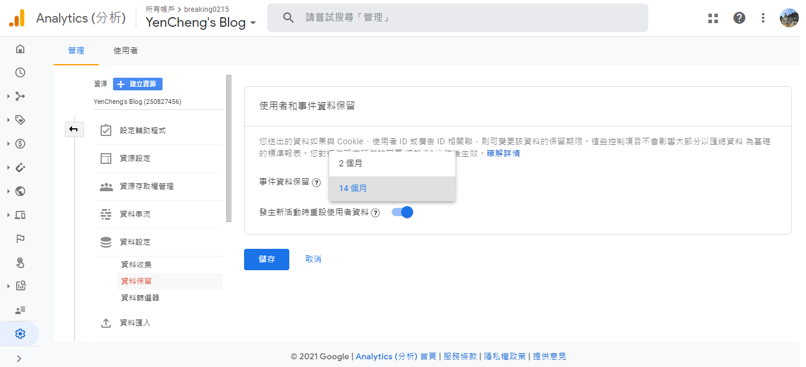

Google Analytics 4 簡介
Google Analytics 推出了第四代 GA4，目的是讓網頁 (GA) 和 APP (GA4F) 能夠一起分析，進一步提供了以隱私為中心的系統設計、跨裝置辨識和分析並提供更深度整合機器學習的報表介面，這篇文章接下來將介紹相關注意事項與開箱體驗心得。
GA4 合併了 GA 和 GA4F 後當然是有好處的，舉例來說能夠幫助行銷人員回答底下五個問題:
- 是哪種行銷管道在不同的平台上吸引最多新用戶?
- 不分平台，總共有多少唯一身分的使用者?
- App 和網站之間發生了多少次轉換?
- 哪個平台比較容易產生轉換?
- 評估跨平台行銷活動的成效，App 導了多少流量到網站購買或透過網站開啟了 App。
參考資料: https://blog.google/products/marketingplatform/analytics/new_google_analytics
隱私為中心的系統設計
以隱私為中心的系統設計，個人推測跟 GDPR、IDFA 政策實施後也有不小關係，畢竟接下來的法規也只會越來越嚴格，即使 Cookie 和身分識別無法使用也會提供基本的分析，但需要特別在設定中啟用信號 (Google Signals)。
參考資料: “Google 信號是指來自網站和應用程式的工作階段資料，Google 會將這類網站和應用程式與已登入 Google 帳戶並啟用廣告個人化的使用者建立關聯。將資料與這些已登入使用者建立關聯，是為了啟用跨裝置報表、跨裝置再行銷，以及能將跨裝置轉換匯出至 Google Ads 的功能。”
參考資料: https://support.google.com/analytics/answer/9445345?hl=zh-Hant
在設定中啟用信號

跨裝置辨識
跨裝置辨識: 新版的分析取代了以往以平台或裝置為主的方式，提供了以顧客為中心的量測，透過行銷人員提供的 User IDs 或是 Google signals 來了解顧客。網頁實作上來說，登入前也可以產生 fingerprint 鎖裝置然後登入後再彙整資料。
GA4 該以事件為基礎，查看使用者或是應用程式傳送的所有事件，辨識轉換在什麼時候發生
- Exploration: 可以將多個變量（用於衡量業務的維度和指標）拖拉後進行即時分析。
- Funnels: 確定轉化的重要步驟，透過打開和關閉選項，了解用戶什麼進入什麼時候下車。
- Path analysis: 了解用戶在渠道內各個步驟之間採取的行動，解釋用戶進行或未進行轉化的原因。
整合機器學習
在搜尋介面上，也提供了自然語言處理的搜尋介面，讓搜尋更適合行銷人員去使用。
更平易近人的搜尋介面，可以參考這份文件 >

以機器學習為核心的報表: 如果數據的 Pattern 出現，做到預測未來也是有機會的，例如預測流失率來提早做出防範。
以機器學習為核心的報表 (圖片來源) >

如何安裝 Google Analytics 4
如果是原本的網站中就有安裝 GA 的話，那在設定中的管理就有可以直接升級的選項，詳細的升級步驟可以參考文件如下:
https://support.google.com/analytics/answer/9744165?hl=zh-Hant&ref_topic=9303319
升級成 Google Analytics 4

安裝方法其實跟舊版大同小異，都是按照引導就可以輕鬆完成，最簡單的就是在網頁一開始處嵌入一段程式碼。
設定輔助程式

升級之後原來的還是會保留，但可以看出來新版的會是提供 App + Web 的版本了。
App + Web
測試的話可以在瀏覽器中安裝 gtmga-debug 這個外掛，接著瀏覽網頁進行測試。
gtmga-debug

目前看起來有提供連結 Google Ads 還有 Big Query 可以進行後續操作。

新一代的 GA 整合了應用程式 + 網站資源，比較大的差異在拿掉了工作階段並換成用參與度的概念取代跳出，參與度是互動工作階段的百分比，用互動工作階段數除以工作階段數來計算。
新 Dashboard vs 舊 Dashboard

選單明顯也拿掉比較多的專有名詞，用更直觀的分類方式進行分類，舊版的看起來很像工程團隊目前有什麼功能就上什麼的概念，命名、分類、查詢的動向都比較不直觀，新版好上手非常多。
新選單 vs 舊選單

可是等等，難道只有參加過鐵人賽 Elastic Cloud 組的我覺得 Google Analytics 4 現在這樣完全不夠炫炮嗎? Elastic Cloud 炫技的部分，請參見 Elastic Kibana Infographic: 資訊圖像化可以炫技到什麼程度，真的是很猛，直接上圖，希望 GA 也可以快步跟上 XDDD

更客製化的商業報表

資料保留設定
新版的 GA4 預設只將事件資料保留 2 個月，若需要延長需要自行到資料保留設定中設定，最多可以延長到 14 個月。
資料保留設定

喜歡這篇文章，請幫忙拍拍手喔 🤣


站內搜尋
其他相關文章

SEO 前的網站設定
2018-09-29
2020 Grow with Google Tour
2020-11-07facebook pixel 與 google tag manager 的應用
2018-10-14
最新的文章
Vite 系統環境變數
2024-05-30Reactjs 問世十年後的開發體驗
2024-05-30Cumulative Layout Shift (CLS)
2024-05-30